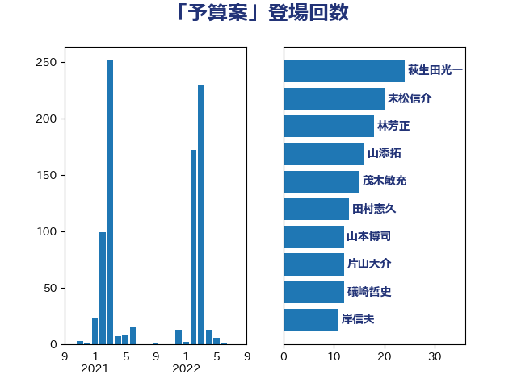

単語「予算案」

| 萩生田光一 | 自由民主党 | 24 回 |
| 末松信介 | 自由民主党 | 20 回 |
| 林芳正 | 自由民主党 | 18 回 |
| 山添拓 | 日本共産党 | 16 回 |
| 茂木敏充 | 自由民主党 | 15 回 |
| 田村憲久 | 自由民主党 | 13 回 |
| 山本博司 | 公明党 | 12 回 |
| 片山大介 | 日本維新の会 | 12 回 |
| 礒崎哲史 | 国民民主党 | 12 回 |
| 岸信夫 | 自由民主党 | 11 回 |
| 後藤茂之 | 自由民主党 | 11 回 |
| 蓮舫 | 立憲民主党 | 11 回 |
| 後藤祐一 | 立憲民主党 | 10 回 |
| 宮本徹 | 日本共産党 | 9 回 |
| 西銘恒三郎 | 自由民主党 | 9 回 |
| 赤羽一嘉 | 公明党 | 9 回 |
| 古賀篤 | 自由民主党 | 8 回 |
| 梶山弘志 | 自由民主党 | 8 回 |
| 杉久武 | 公明党 | 7 回 |
| 水岡俊一 | 立憲民主党 | 7 回 |
| 藤原崇 | 自由民主党 | 7 回 |
| 道下大樹 | 立憲民主党 | 7 回 |
| 野田聖子 | 自由民主党 | 7 回 |
| 小林鷹之 | 自由民主党 | 6 回 |
| 浜地雅一 | 公明党 | 6 回 |
| 熊田裕通 | 自由民主党 | 6 回 |
| 芳賀道也 | 国民民主党 | 6 回 |
| 吉川沙織 | 立憲民主党 | 5 回 |
| 堀井巌 | 自由民主党 | 5 回 |
| 島尻安伊子 | 自由民主党 | 5 回 |
| 稲津久 | 公明党 | 5 回 |
| 鈴木俊一 | 自由民主党 | 5 回 |
| 青木一彦 | 自由民主党 | 5 回 |
| 音喜多駿 | 日本維新の会 | 5 回 |
| 吉田宣弘 | 公明党 | 4 回 |
| 城井崇 | 立憲民主党 | 4 回 |
| 小田原潔 | 自由民主党 | 4 回 |
| 山口壯 | 自由民主党 | 4 回 |
| 岩渕友 | 日本共産党 | 4 回 |
| 斉藤鉄夫 | 公明党 | 4 回 |
| 武田良太 | 自由民主党 | 4 回 |
| 浦野靖人 | 日本維新の会 | 4 回 |
| 玉木雄一郎 | 国民民主党 | 4 回 |
| 田村まみ | 国民民主党 | 4 回 |
| 田村智子 | 日本共産党 | 4 回 |
| 石川大我 | 立憲民主党 | 4 回 |
| 輿水恵一 | 公明党 | 4 回 |
| 鷲尾英一郎 | 自由民主党 | 4 回 |
| 中西祐介 | 自由民主党 | 3 回 |
| 今枝宗一郎 | 自由民主党 | 3 回 |
| 吉川元 | 立憲民主党 | 3 回 |
| 山田賢司 | 自由民主党 | 3 回 |
| 岸田文雄 | 自由民主党 | 3 回 |
| 平山佐知子 | 無所属 | 3 回 |
| 徳永久志 | 立憲民主党 | 3 回 |
| 東徹 | 日本維新の会 | 3 回 |
| 松野博一 | 自由民主党 | 3 回 |
| 森屋隆 | 立憲民主党 | 3 回 |
| 橋本岳 | 自由民主党 | 3 回 |
| 河野太郎 | 自由民主党 | 3 回 |
| 源馬謙太郎 | 立憲民主党 | 3 回 |
| 牧山ひろえ | 立憲民主党 | 3 回 |
| 田畑裕明 | 自由民主党 | 3 回 |
| 石井苗子 | 日本維新の会 | 3 回 |
| 金子恭之 | 自由民主党 | 3 回 |
| 上川陽子 | 自由民主党 | 2 回 |
| 中川宏昌 | 公明党 | 2 回 |
| 中谷一馬 | 立憲民主党 | 2 回 |
| 丹羽秀樹 | 自由民主党 | 2 回 |
| 井上信治 | 自由民主党 | 2 回 |
| 井上哲士 | 日本共産党 | 2 回 |
| 佐藤英道 | 公明党 | 2 回 |
| 前原誠司 | 国民民主党 | 2 回 |
| 吉田豊史 | 日本維新の会 | 2 回 |
| 土屋品子 | 自由民主党 | 2 回 |
| 大口善徳 | 公明党 | 2 回 |
| 守島正 | 日本維新の会 | 2 回 |
| 小沼巧 | 立憲民主党 | 2 回 |
| 小泉進次郎 | 自由民主党 | 2 回 |
| 岸真紀子 | 立憲民主党 | 2 回 |
| 新垣邦男 | 立憲民主党 | 2 回 |
| 柳ヶ瀬裕文 | 日本維新の会 | 2 回 |
| 森山浩行 | 立憲民主党 | 2 回 |
| 浜口誠 | 国民民主党 | 2 回 |
| 清水真人 | 自由民主党 | 2 回 |
| 渡辺猛之 | 自由民主党 | 2 回 |
| 石井啓一 | 公明党 | 2 回 |
| 石田昌宏 | 自由民主党 | 2 回 |
| 菅義偉 | 自由民主党 | 2 回 |
| 藤田文武 | 日本維新の会 | 2 回 |
| 阿部弘樹 | 日本維新の会 | 2 回 |
| 高橋光男 | 公明党 | 2 回 |
| 麻生太郎 | 自由民主党 | 2 回 |
| こやり隆史 | 自由民主党 | 1 回 |
| たがや亮 | れいわ新選組 | 1 回 |
| ながえ孝子 | 無所属 | 1 回 |
| 三ッ林裕巳 | 自由民主党 | 1 回 |
| 三原じゅん子 | 自由民主党 | 1 回 |
| 中山展宏 | 自由民主党 | 1 回 |
| 中曽根康隆 | 自由民主党 | 1 回 |
| 中村裕之 | 自由民主党 | 1 回 |
| 中西健治 | 自由民主党 | 1 回 |
| 井上貴博 | 自由民主党 | 1 回 |
| 佐藤茂樹 | 公明党 | 1 回 |
| 倉林明子 | 日本共産党 | 1 回 |
| 冨樫博之 | 自由民主党 | 1 回 |
| 務台俊介 | 自由民主党 | 1 回 |
| 古川直季 | 自由民主党 | 1 回 |
| 古川禎久 | 自由民主党 | 1 回 |
| 古賀友一郎 | 自由民主党 | 1 回 |
| 吉田統彦 | 立憲民主党 | 1 回 |
| 吉良州司 | 無所属 | 1 回 |
| 堀内詔子 | 自由民主党 | 1 回 |
| 大家敏志 | 自由民主党 | 1 回 |
| 大西健介 | 立憲民主党 | 1 回 |
| 太田房江 | 自由民主党 | 1 回 |
| 宮本周司 | 自由民主党 | 1 回 |
| 宮本岳志 | 日本共産党 | 1 回 |
| 寺田学 | 立憲民主党 | 1 回 |
| 小宮山泰子 | 立憲民主党 | 1 回 |
| 小池晃 | 日本共産党 | 1 回 |
| 小西洋之 | 立憲民主党 | 1 回 |
| 小野泰輔 | 日本維新の会 | 1 回 |
| 山井和則 | 立憲民主党 | 1 回 |
| 岡田克也 | 立憲民主党 | 1 回 |
| 岩屋毅 | 自由民主党 | 1 回 |
| 志位和夫 | 日本共産党 | 1 回 |
| 朝日健太郎 | 自由民主党 | 1 回 |
| 本村伸子 | 日本共産党 | 1 回 |
| 本田顕子 | 自由民主党 | 1 回 |
| 杉本和巳 | 日本維新の会 | 1 回 |
| 櫛渕万里 | れいわ新選組 | 1 回 |
| 櫻井周 | 立憲民主党 | 1 回 |
| 河西宏一 | 公明党 | 1 回 |
| 津島淳 | 自由民主党 | 1 回 |
| 浜田聡 | NHK党 | 1 回 |
| 浮島智子 | 公明党 | 1 回 |
| 片山さつき | 自由民主党 | 1 回 |
| 石川博崇 | 公明党 | 1 回 |
| 福山哲郎 | 立憲民主党 | 1 回 |
| 福重隆浩 | 公明党 | 1 回 |
| 秋野公造 | 公明党 | 1 回 |
| 穀田恵二 | 日本共産党 | 1 回 |
| 羽田次郎 | 立憲民主党 | 1 回 |
| 自見はなこ | 自由民主党 | 1 回 |
| 舟山康江 | 国民民主党 | 1 回 |
| 菊田真紀子 | 立憲民主党 | 1 回 |
| 落合貴之 | 立憲民主党 | 1 回 |
| 藤巻健太 | 日本維新の会 | 1 回 |
| 西村康稔 | 自由民主党 | 1 回 |
| 足立敏之 | 自由民主党 | 1 回 |
| 金城泰邦 | 公明党 | 1 回 |
| 階猛 | 立憲民主党 | 1 回 |
| 青山大人 | 立憲民主党 | 1 回 |
| 高橋千鶴子 | 日本共産党 | 1 回 |
| 鰐淵洋子 | 公明党 | 1 回 |
| 鳩山二郎 | 自由民主党 | 1 回 |